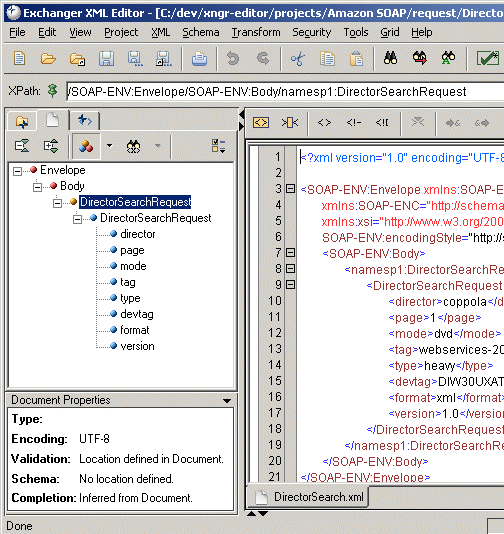
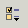
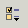
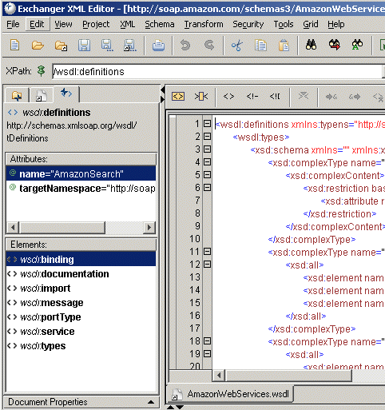
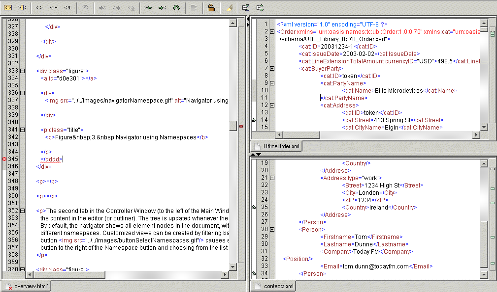
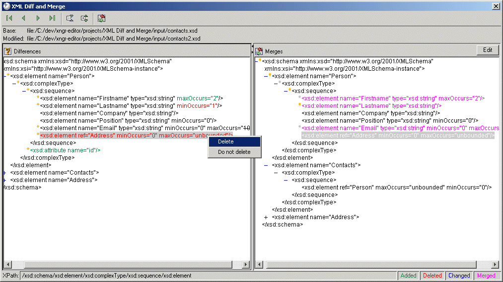
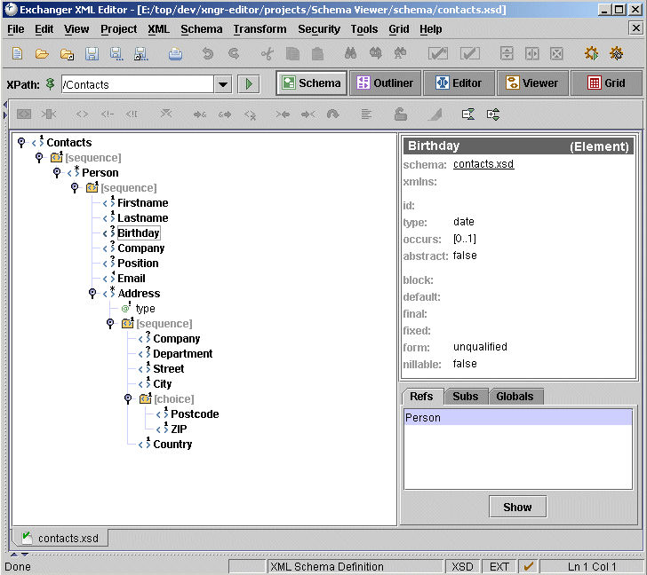
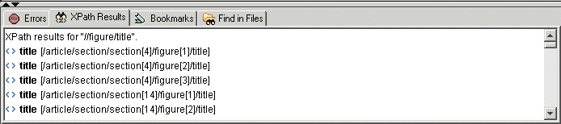

Window Overview
Exchanger XML

Figure 1. Exchanger XML
The Exchanger XML Editor consists of 3 windows
-
The Main Window which usually contains the Editor View, but can also display a Tree Viewer, an Outliner for tag-free data
entry and a Schema Viewer for visualizing the XML Schema associated with the open XML file.
-
The Output Window (below the Main Window) that contains the Errors tab showing the results of the latest check for well-formedness
or validation, the XPath Results tab containing clickable links to the nodes corresponding to the query entered in the XPath
query field at the top of the Editor, the Bookmarks tab containing clickable links to all defined bookmarks and the Find
In Files results tab.
-
The Controller Window (to the left of the Main Window) that contains the Projects tree view, the Navigator which displays
a tree view of the nodes in the current document that can be filtered by Namespace or using an XPath query, and the Helpers
tab that provides a means of easily adding elements and attributes in the active document. The Controller Window also contains
a collapsable Document Properties window at the bottom.
Other components include the General Toolbar and the XPath Query field.
Projects

Figure 2. Projects
The first tab in the Controller Window (to the left of the Main Window) contains the Projects view. Projects are used for
grouping related documents and facilitate the use of batch operations such as checking for well-formedness and validation
across a number of files.
Navigator
Figure 3. Navigator using Namespaces
The second tab in the Controller Window (to the left of the Main Window) contains a Navigator that can be used to traverse
the content in the editor (or outliner). The tree is updated whenever the current document is saved or checked for well-formedness.
By default, the navigator shows all element nodes in the document, with colored icons used to differentiate elements from
different namespaces. Customized views can be created by filtering based on Namespace or XPath. Clicking on the Namespace
button causes element nodes in all namespaces to be displayed, but specific namespaces can be chosen by clicking on the drop-down
button to the right of the Namespace button and choosing from the list displayed.

Figure 4. Navigator using XPaths
Click on the XPath Filter button  to specify the subset of nodes you would like to see in the navigator.
By default, only elements are displayed in the navigator but it is possible to turn on/off the display of element names,
element content, attribute names and attribute values in the Navigator Properties dialog by pressing the preferences dropdown
. In the above example, a simple but effective table of contents has been generated for the input file based on section titles.
Similar lists of figures, tables, etc could easily be used to greatly improve navigation in large documents.
to specify the subset of nodes you would like to see in the navigator.
By default, only elements are displayed in the navigator but it is possible to turn on/off the display of element names,
element content, attribute names and attribute values in the Navigator Properties dialog by pressing the preferences dropdown
. In the above example, a simple but effective table of contents has been generated for the input file based on section titles.
Similar lists of figures, tables, etc could easily be used to greatly improve navigation in large documents.
Element and Attribute Helpers
Figure 5. Element and Attribute Helpers
The third tab on the left hand side of the editor contains helpers that can be used to easily add elements and attributes
in the editor (or outliner).
Editor
Figure 6. Editor
The Editor Window contains the core functionality of the Exchanger XML offering, including Tag Prompting, Syntax Highlighting,
Refactoring, Find and Replace supporting XPaths and Regular Expressions, etc. The Editor Toolbar at the top of the Editor
Window provides quick access to various features such as Select Element Content, Add Comment, Split Element while all functions
are available using customizable keyboard short-cuts. Margins for Bookmark creation, Line Numbering and Content Folding are
placed on the left of the Editor pane, while on the right is the Overview margin, giving a document-wide view of Bookmark
and Syntax Error locations.
Grid

Figure 7. Grid
The Grid facilitates tag-free editing of XML data. The user can control grid features using the View->Grid Properties menu.
XSLT Debugger

Figure 8. XSLT Debugger
The XSLT Debugger runs in its own window and displays multiple stylesheet files and multiple input files above one or more
output files that are generated as a result of the transformation. Information about the current transformation is displayed
on the right-hand side of the screen, including names, values and types for global and local variables, call stacks for templates,
input and output data and traces for stylesheets, input and output data.
Unordered XML Differencing and Merge
Figure 9. XML Diff and Merge
The Unordered Diff tool runs in its own window and compares two input files and shows additions, deletions and modifications
in different colors in a popup window. Changes between the base file and the modified file can be merged, one at a time, and
the newly created document can be opened in the editor.
Viewer

Figure 10. Viewer
The Viewer displays a tree-view of the current document - the user can control the display of element content, attributes,
comments, namespaces etc in the View->Viewer Properties menus.
Schema Viewer
Figure 11. Schema Viewer
The Schema Viewer presents a tree view of the schema associated with the current active document.
Outliner

Figure 12. Outliner
The Outliner facilitates the tag-free editing of XML data.
Output Window

Figure 13. Errors
Figure 14. XPath Results

Figure 15. Bookmarks

Figure 16. Find in Files
The Output Window contains separate tabs for Errors, XPath Results, Bookmarks and Find in Files results. Clicking on the contents
in the output window will take you to the corresponding position in the Editor Window.